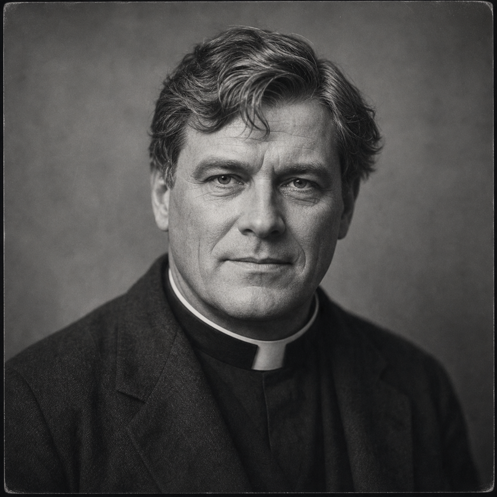

Father Robert Mercer
(375 Points)
Male; Age 41; 5'9", 182 lbs; A broad-shouldered Catholic priest in his early forties with kind eyes, a careful Roman collar, good shoes, and the sort of stillness that makes frightened people breathe easier. He looks gentle until he decides not to yield.
| ST: 10/12 [0] | IQ: 15 [60] | Speed: 5.75 |
| DX: 11 [10] | HT: 12/10 [20] | Move: 5 |
| Dodge: 5 |
Advantages
Alertness +1 [5]; Blessed 1 [10] (Reaction: +1 Deity's Followers); Charisma +2 [10] (Reaction: +2); Claim to Hospitality [5]; Clerical Investment 1 [5] (Reaction: +1); Common Sense [10]; Contacts (Catholic Hospital Administrator) (Skill 15, 9 or less, Somewhat Reliable) [2]; Contacts (Labor Column Reporter) (Skill 15, 12 or less, Somewhat Reliable) [4]; Contacts (Parish Chancellor) (Skill 15, 9 or less, Somewhat Reliable) [2]; Contacts (Police Desk Sergeant) (Skill 12, 9 or less, Somewhat Reliable) [1]; Contacts (Settlement House Nurse) (Skill 12, 9 or less, Somewhat Reliable) [1]; Eidetic Memory 1 1 [30]; Empathy [15]; Fit [5] (HT: +1; Fatigue Loss: Normal; Fatigue Recovery: Double Rate); Intuition [15]; Lang: English (Native) [0]; Lang: Latin (Broken Spoken/Accented Written) [3]; Lang: Spanish (Native Spoken/Native Written) [6]; Magery 3 [35]; Patron (Followers of the Right Hand) (15 or less) [60] (Equipment: Standard, +5; Special Qualities (Access to Magic in Non-magical World): Very Unusual, +10; Secret: -5; Subtraction (Minimal Intervention): -5); Rank 1 (Religious) [5]; Reputation +1 (Reliable priest-lawyer among Catholics, cops, and boxing circles) [5] (Reaction: +1); Status 1 [5]; Strong Will +3 [12] (Will: 18); True Faith [15]; Voice [10] (Reaction: +2).
Disadvantages
Code of Honor (Priestly) [-10]; Disciplines of Faith [-5]; Duty (15 or less) [-25] (Involuntary: -5; Subtraction (Extremely Hazardous): -5); Enemy (Unknown Enemies of FRH) [-60] (Unknown: -5; Subtraction (Access to Magic in Non-magical World): -15); Secret (Church-basement labor organizing network) [-20]; Secret (Magery and occult ministry) [-20]; Sense of Duty (Innocents) [-10]; Vow (Never refuse confession, burial, or last rites to one in mortal need) [-5].
Quirks
Collects old hotel matchbooks from solved cases; Hates being touched unexpectedly; Keeps spare gloves and collar pins for emergency concealment; Smokes when thinking even though brimstone and smoke cling to him; Talks to his amulet before hard cases. [-5]Skills
Accounting-15 [2]; Administration-18 [4]; Bard-18* [½]; Detect Lies-19* [2]; Diagnosis/TL6-15 [2]; Diplomacy-17* [2]; Exorcism-25 [12]; First Aid/TL6-16 [1]; Hidden Lore (Supernatural Creatures)-16 [2]; History-15 [2]; History (Church)-15 [2]; Law-14 [1]; Meditation-14 [2]; Physician/TL6-17 [4]; Politics-16* [2]; Psychology-18* [2]; Research-18 [4]; Savoir-Faire (Church)-17* [0]; Streetwise-15 [1]; Symbol Drawing-15 [2]; Teaching-18 [4]; Theology-19 [6]; Writing-15 [1].
*Cost modifiers: Charisma, Voice, Empathy.
Spells
Affect Spirits-20 [6]; Block-20 [6]; Continual Light-16; Create Air-17; Deflect Missile-20 [6]; Detect Magic-22 [10]; Lend Health-22 [10]; Lend Strength-17; Light-16; Mage Sight-17; Minor Healing-26 [18]; Purify Air-17; See Invisible-17; Sense Emotion-16; Sense Foes-20 [6]; Sense Spirit-22 [10]; Summon Spirit-18 [2]; Truthsayer-22 [10]; Turn Spirit-26 [18].
Equipment
Boots, Leather (PD 2, DR 2; 4 lbs.; $10); Cigarette Lighter ($1); First Aid Kit, Individual (2 lbs.; $6; +1 to First Aid); Flashlight (1 lb.; $2); Hat, Slouch ($1; TL: 6); Lockpicks (good; $200; Skill: 11); Playing Cards ($½); Powerstone (Strength 5; $1,240); Smith & Wesson Military & Police .38 Special (cr 2d-1, Skill: 7; 2 lbs.; $30; Malfunction: crit.; SS: 10; Acc: 2; Half DMG: 120; MAX: 1500; RoF: 3~; Shots: 6; ST: 8; Rcl: -1; TL: 6).Description
Father Robert Mercer belongs to the part of a city that polite society likes to call ordinary while living off the labor it never quite sees. He is a Chicago parish priest whose days run through relief kitchens, hospital visits, funerals, labor disputes, confessions, and the endless neighborhood work of keeping people from going under one at a time. He is broad-shouldered, careful, and calm in the way that makes frightened people hand him the truth without noticing exactly when they decided to trust him. Wealth and power tend to underestimate that gentleness until they discover that it covers a much harder commitment to worker dignity, mutual aid, and moral accountability than they had planned to accommodate.Robert's priesthood is therefore not decorative and not detached. It is municipal, bodily, and social. He knows who is hungry, who is striking, who has lost a child, who is trying to bury someone cheaply, who is lying about a wound, and which family is too proud to admit it needs help. The hidden labor network in his church basement is not an ideological hobby; it is an extension of his sacramental life. He believes that a priest should know what rents are doing, what employers are doing, and who in the parish is being quietly broken by both. That same seriousness shapes his occult life. If the supernatural touches his world, it touches kitchens, wards, boarding houses, picket lines, and funeral parlors before it touches any grand cathedral abstraction.
His magic grew out of that life rather than interrupting it. Robert was a priest first and only then a serious caster. The gift sharpened what was already there: healing, discernment, truth, spirit-sense, protection, and a capacity to stand in bad rooms without yielding them immediately to fear. He does not feel like a fantasy cleric dropped into 1923. He feels like a real parish priest whose vocation proved deep enough to carry impossible responsibility once it arrived. That is why he can steady a frightened family, read a hospital ward, confront a lie without cruelty, and still call on powers that most of his own Church would rather not have to explain.
For a new player, Robert should feel warm to the people who need him and immovable to the people who try to use them. He looks gentle until he decides not to yield. His faith is not theatrical. It is organized, practical, neighborhood-bound, and stubborn enough to keep one hand on the soup line and the other on the edge of the occult when the city requires both.